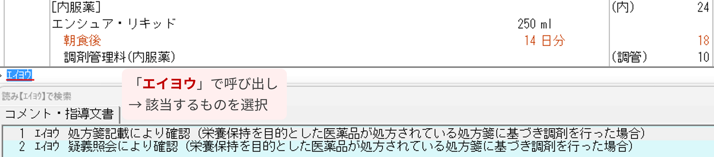

栄養保持を目的とした医薬品 確認チェックリスト
2026年6月〜
対象の経腸栄養剤を保険給付するには、投与の必要性の確認とレセコメ入力が必要です。
確認の流れ
処方応需 → レセコメ入力
1
栄養剤の処方を応需 →
対象リスト
に当てはまるか確認したか
下記6品目が対象（2026年3月現在）。対象外の薬なら、この確認・レセコメは不要。
対象となる医薬品
イノラス配合経腸用液
エネーボ配合経腸用液
エンシュア・H
エンシュア・リキッド
ツインラインNF配合経腸用液
ラコールNF配合経腸用液
備考欄を確認
2
処方箋の
備考欄に①〜③の記載があるか
を確認したか
① 手術後の患者である旨
② 経管により栄養補給を行っている旨
③ ①②以外で、医師が投与が必要と判断した理由
（食事だけでは栄養摂取が困難な場合等。理由そのものが記載される）
①〜③のいずれかが
記載あり
（疑義照会は不要）
→ 手順4へ
①〜③の
記載なし
→ 手順3へ
記載がなければ
3
記載がなければ
疑義照会
で①〜③を確認したか
①〜③のどれに当たるかを確認。
③の場合は投与が必要な理由を聞き取る
。
過去に同一患者・同一医療機関の処方で確認済みなら、
再度の疑義照会は不要
。レセコメは「疑義照会により確認」を選び、必要に応じて確認時期・理由を補足。確認内容は薬歴表紙等にも記録する。
疑義照会の例
「令和8年度の調剤報酬改定で、栄養剤（経腸栄養剤）を保険給付するには投与の必要性の確認が必要になりました。○○様に処方の
エンシュア・リキッド
について、
①手術後の患者さんへの投与
／
②経管により栄養補給を行っている患者さんへの投与
／
③それ以外で、先生が当該医薬品の投与が必要と判断された場合はその理由
、のいずれに該当するかご教示いただけますか。」
✕ ①〜③のいずれにも該当しない・確認できないときは、その薬剤は保険対象外
。保険給付しない。
給付するなら必ず
4
レセコメ（摘要欄コメント）を入力したか
＝給付の必須要件
確認した方法に合わせて、下記の文言を入力する。
入力がないと保険給付の要件を満たさない。
備考欄に投与の必要性の記載あり
「処方箋記載により確認」
備考欄に記載がなく、疑義照会で確認
「疑義照会により確認」

▲ 「エイヨウ」呼び出しの候補画面（エンシュア・リキッドの例）
詳しい解説は
栄養保持を目的とした医薬品の保険給付の適正化
を参照。